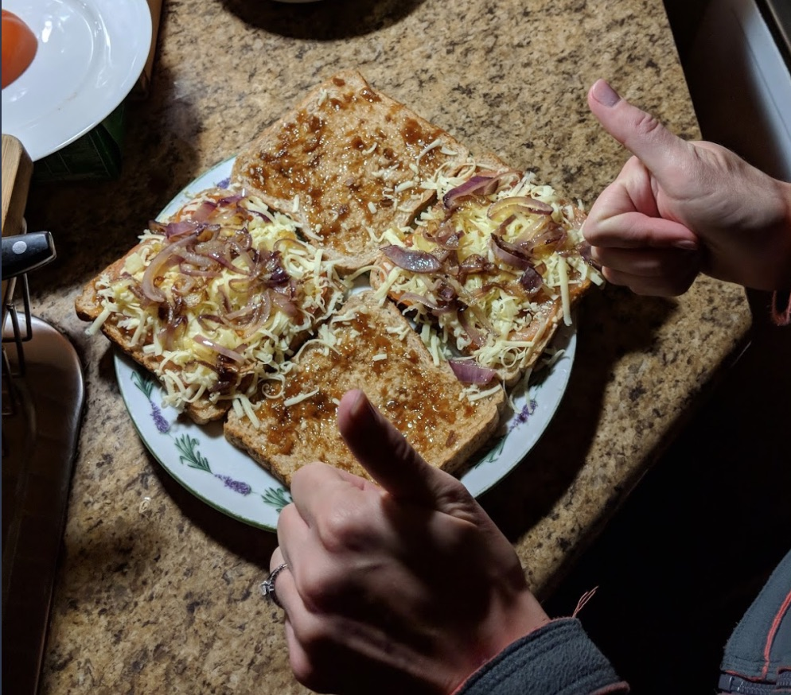

Ingredients
- Bread of choice, 2 slices per broodjie
- Chutney
- Tomato, sliced
- Onion, sliced and caramelised
- Cheese of choice, grated
- Spread one side of both pieces of bread with chutney (as one would with butter).
- On one of the slices, layer the tomato, onion and cheese and close the sandwich.
-
Braai over fire for approximately 5 minutes, or until desired level of “doneness” has been
reached.
Serve one per person.